Zoals al eerder verteld, er zijn momenteel 122 verschillende Pokémon spellen on de 9 generaties die er nou zijn van Pokémon.
De spellen waar het meest naar gekeken worden
zijn de zogehete mainline games, deze games zijn de eerste games in een nieuwe Pokémon generatie en verkopen vaak veel beter dan andere Pokémon spellen in diezelfde generatie.
Volgende van de 1ste generatie Pokémon tot de 9e generatie Pokémon zijn dit de mainline Pokémon games:
Pokémon Red en Pokémon Blue (1ste generatie),
Pokémon Gold en Silver (2e generatie),
Pokémon Ruby en Sapphire (3e generatie),
Pokémon Diamond en Pearl (4e generatie),
Pokémon Black en White (5e generatie),
Pokémon X en Y (6e generatie),
Pokémon Sun en Moon (7e generatie),
Pokémon Sword en Shield (8ste generatie)
en Pokémon Scarlet en Violet (9e generatie).
Elke generatie brengt weer nieuwe en unieke Pokémon in de wereld, maar niet elke generatie voegt even veel Pokémon toe.
De eerste generatie bracht 151 Pokémon
met zich mee, maar de 2e generatie bracht maar 100 nieuwe Pokémon.
Het verschilt per game hoeveel nieuwe Pokémon erbij komen, maar tegenwoordig komen er niet
alleen nieuwe Pokémon bij in de game zelf, vanaf de 8ste generatie werdt het mogelijk een DLC (downloadable content) te kopen voor de games die nog meer nieuwe
Pokémon toevoegd.
Ken je toevallig iemand die de dlc zelf heeft maar jij niet dan is het ook mogelijk om de dlc Pokémon naar jezelf te traden via die kennis,
je hoeft dus niet persé de dlc te kopen om aan de nieuwe Pokémon te komen die in de dlc zitten.
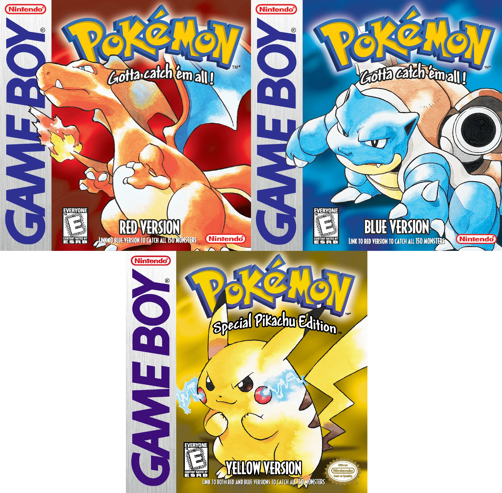
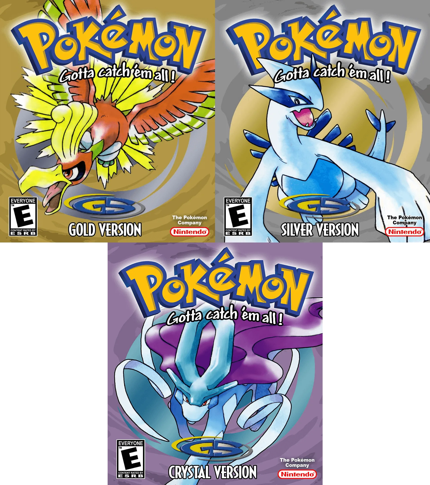
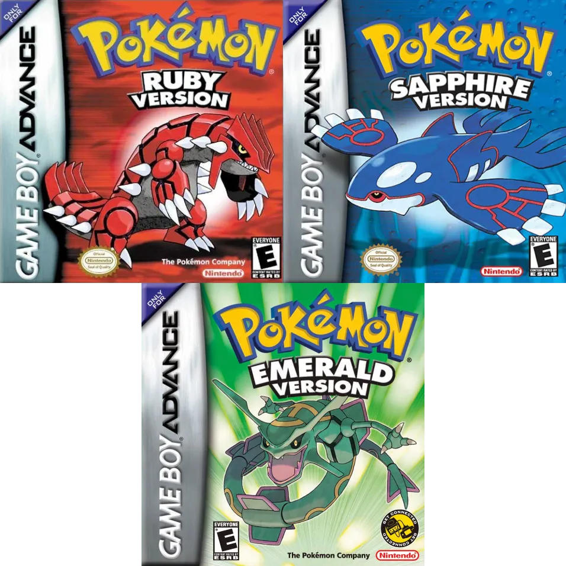
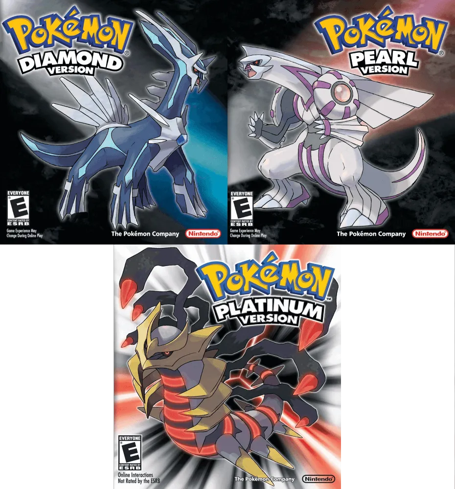
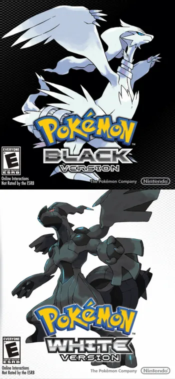
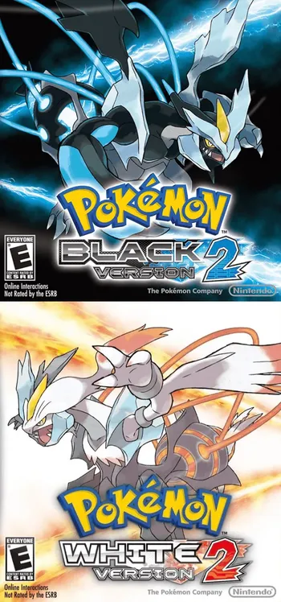
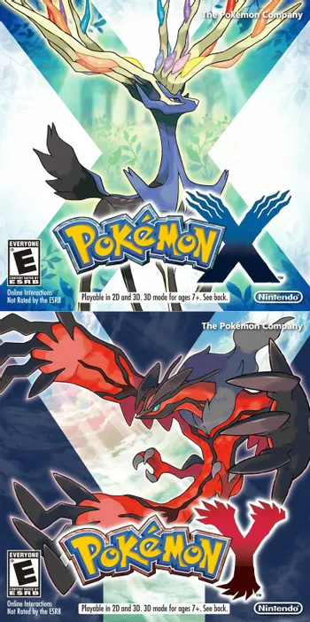
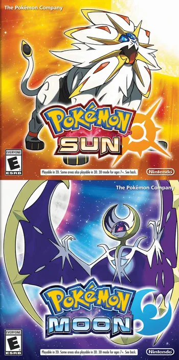
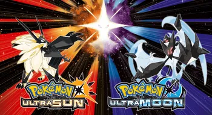
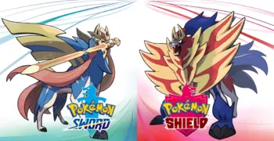
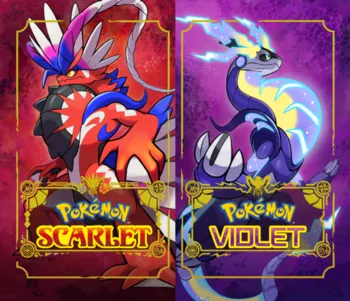